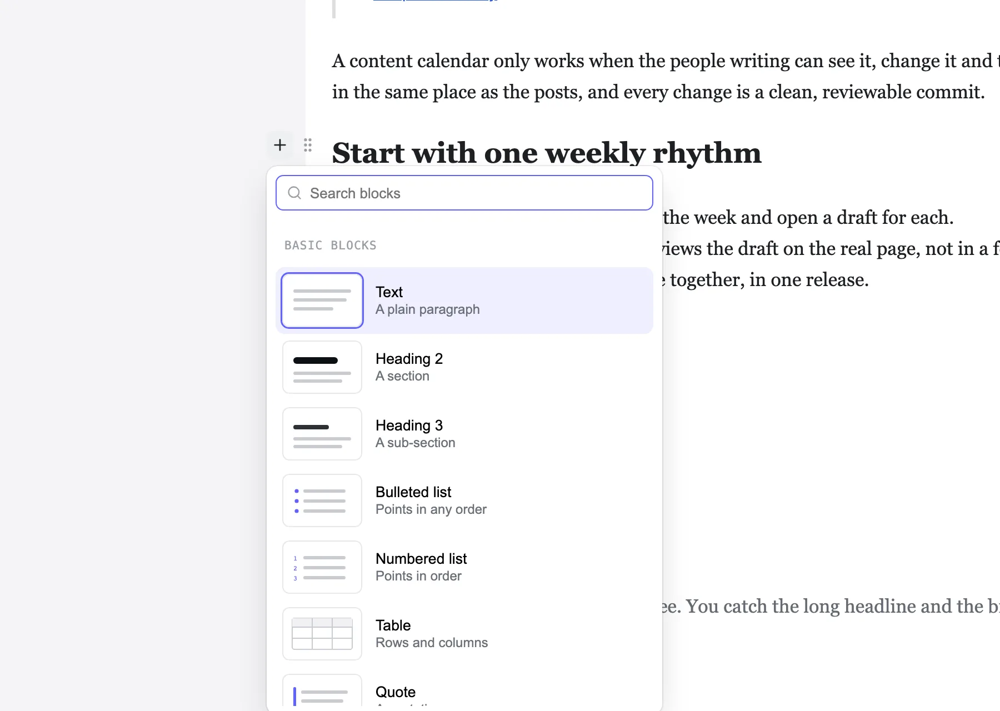

Type “/” for any block
A searchable block menu with a small drawing of each block. Or click the “+” beside a line.
Writers click into your Astro site’s own design and type, like in Notion. Every save is a clean git commit in their name. No content database, no monthly bill.
Try the live demoGet it on GitHub
We compared 21 other editors. None of them lets writers edit on the real page from your own server with no database server. See the comparison

Writing
The block editor people already know, drawn on your real design instead of grey form fields.
A searchable block menu with a small drawing of each block. Or click the “+” beside a line.
A grip on every block: drag it, or move it up, down or to a place you pick, duplicate it or delete it.
One search box for pages, posts, the editor’s screens and its settings.
Word’s headings and lists come in as real blocks, without its office markup.
Every block under its heading: jump to one, fold a section, drag rows to move them.
A crash or a closed tab brings your words back. History keeps every saved version.
Inspired by Ghost
We studied Ghost’s editor row by row, kept what writers love, and put it on the real page.
Caption and alt text under the picture, where you see it. By default, publishing waits until every image has alt text.
Search Unsplash or Pexels from the media library. The photographer’s name is kept with the photo.
What changes, the checks (links, alt text, the page on a phone), then now or at a time you pick.
Inspired by Prismic
We used Prismic and left over its price and the missing path from development to live. Markstage includes what we wanted, free to self-host.
Reusable sections, snippets and page templates, like Prismic’s Slices. Drag one from the Library onto the live page.
Prismic: Slices
Promote code and content together by git merge, with checks and rules. Included and free.
Prismic: Paid option on Platinum ($675); 2 on Enterprise
Bundle changes, preview them together with a link that expires, then publish them at once.
Prismic: Yes
Signed-in editors get an edit link on the page itself. Visitors see nothing of it.
Decide who may edit, publish or delete, down to collections, locales and single fields.
Prismic: From Medium ($150); custom on Enterprise
Claude or any MCP client reads the site and drafts as you. It publishes only if you allow it.
Prismic: Claude and ChatGPT plugins
AI & MCP
Bring your own AI key. Every suggestion sits next to the value it is for, and nothing is saved until a person reads it.
An agent works with the same roles, locks and checks as the person whose token it holds, and only ever drafts.
Alt text for an image, a search title and description, a translation draft, a summary of a promotion.
Showcase · taskrhino.ca
Our own site is the first one written with Markstage. It moved from WordPress to a static Astro site: 158 posts, 20 pages and 2,414 images and files, every address kept. On a phone, its home page now scores 99 for speed instead of 71.
Lighthouse, median of three runs, 28 and 29 October 2026: the old site live, the new one from its own build before launch, so its load times are not those of a real host.
See the before and afterRead why we built itVisit taskrhino.ca
Compare
The rows teams decide on most, from our comparison. Each cell has its source there.
| What you get | Markstage | WordPress | Ghost | Prismic |
|---|---|---|---|---|
| Edits on the site’s own design | Yes The site's own components and CSS | No Headless: written in WordPress's admin | No Headless: written in Ghost's own editor | Partly Page Builder: drag sections, live preview |
| Content as files in git | Yes | No Read by REST API | No MySQL database, read by the Content API | No Hosted, read by API |
| Environments or staging | Yes Local, staging, production; free | Not confirmed | Not confirmed | Partly Paid option on Platinum ($675); 2 on Enterprise |
| Roles | Yes Five built in, plus custom roles | Yes Six roles | Yes Contributor, Author, Editor, Administrator, Owner | Partly From Medium ($150); custom on Enterprise |
| What you run | One Node server next to your static site | A WordPress site (PHP with MySQL or MariaDB) | A Ghost server (Node.js and MySQL 8), or Ghost(Pro) | Nothing; hosted |
| Price to start | Free | Free software; you pay for hosting | Free software; Ghost(Pro) Starter $18/mo ($15 yearly) | Free; Starter $10/mo per repository, yearly |
Get started
Just looking? The live demo runs the editor on the example blog in your browser, with nothing to install.
Markstage is not on npm yet: install it from a clone. Clone the repo, install, and open the editor on the example blog. Needs Node.js 22.13 or newer and git.
git clone https://github.com/spcaeo/markstage.gitcd markstage && npm installnpm run dev -w examples/blogYour site needs Astro 7.4 or newer. In your site’s folder next to the clone, link the packages (they are not on npm yet), add markstage() to the integrations in astro.config.mjs and describe your collections in markstage.config.mjs.
npm install ../markstage/packages/core ../markstage/packages/editor ../markstage/packages/astroSelf-host the Markstage server next to your static site: one docker run with the server image, Docker compose, or systemd and nginx. Sign-in, roles, releases and backups come with it.
Markstage is in pre-release and in active development. The clone address: https://github.com/spcaeo/markstage.git
Questions
Markstage is a visual editor for Markdown, MDX and JSON content sites. Writers edit on the site’s own design instead of in form fields, and every save is a clean git diff of exactly what they changed (with the Markstage server, a commit in their name). Its first adapter is Astro.
Yes. Markstage is source-available under the Elastic License 2.0: you may use, copy, change and self-host it for free, including in your business and for your clients’ sites. You may not offer it to others as a hosted or managed service without a commercial licence from Space-O Technologies.
Yes. The code is public on GitHub, free to read, change, use and self-host. Markstage is source-available, not open source in the OSI sense: it may not be resold as a hosted service without a commercial licence.
No. Content stays as Markdown and JSON files in your git repo. One SQLite file on the server (node:sqlite, built into Node.js 22.13 and newer) holds people, sessions, the inbox, drafts in progress, trash, releases, the media index and the audit log. There is no database server to install.
Astro today, through the @markstage/astro integration. The core (the document model and the Markdown converter) has no framework in it, so other adapters can follow.
Only the blocks you change. Opening and saving a file with no edit leaves it byte for byte the same, and moving a block and moving it back gives an identical file, so a review shows exactly what moved.
On your own computer in astro dev, with no sign-in and on 127.0.0.1 only, and on your own server for a team: Docker compose, or systemd and nginx. There is no Markstage cloud.
An agent that speaks the Model Context Protocol can read the site and draft changes as the person whose token it holds. It never deletes or promotes anything, and by default a person reviews its release and puts it live. An owner or administrator may allow an agent to publish; the site’s checks and publish rules still decide.
Made by Space-O Technologies. Free to self-host under the Elastic License 2.0.